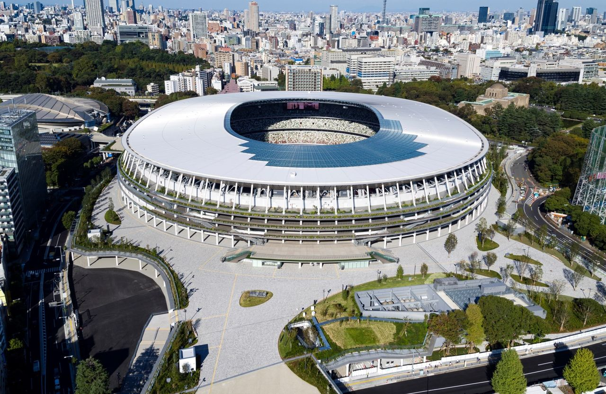
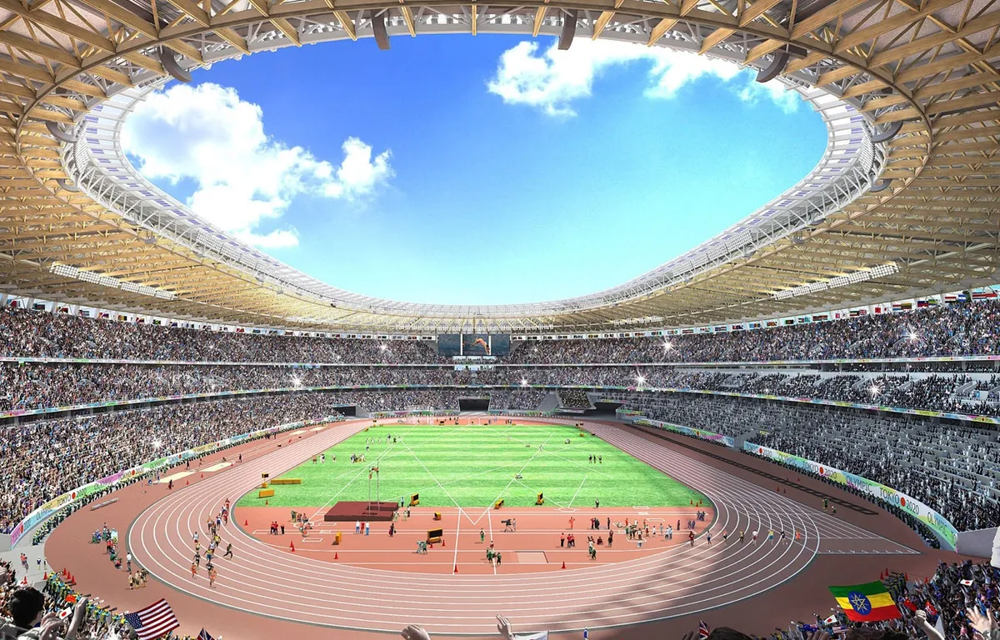

Stade Olypique Tokyo
Le stade national du Japon, ou Nouveau stade national pendant sa phase de construction, est un stade multi-fonctions situé à Kasumigaoka, dans l’arrondissement de Shinjuku à Tokyo. Il a été inauguré en décembre 2019 et peut accueillir jusqu’à 68 000 spectateurs.
Le stade national du Japon est le principal lieu d’accueil des cérémonies d’ouverture et de clôture des Jeux olympiques et paralympiques de Tokyo 2020. Il a également accueilli plusieurs événements sportifs et culturels, tels que la Coupe du monde de rugby à XV 2019, le concert mondial de la chanteuse Taylor Swift en 2019 ou encore le spectacle musical « The Greatest Showman » en 2020.
Il est composé de trois parties principales : le toit circulaire qui abrite les tribunes et les vestiaires, le corps rectangulaire qui contient les espaces techniques et les logements des joueurs, et la base triangulaire qui renvoie vers le centre-ville.